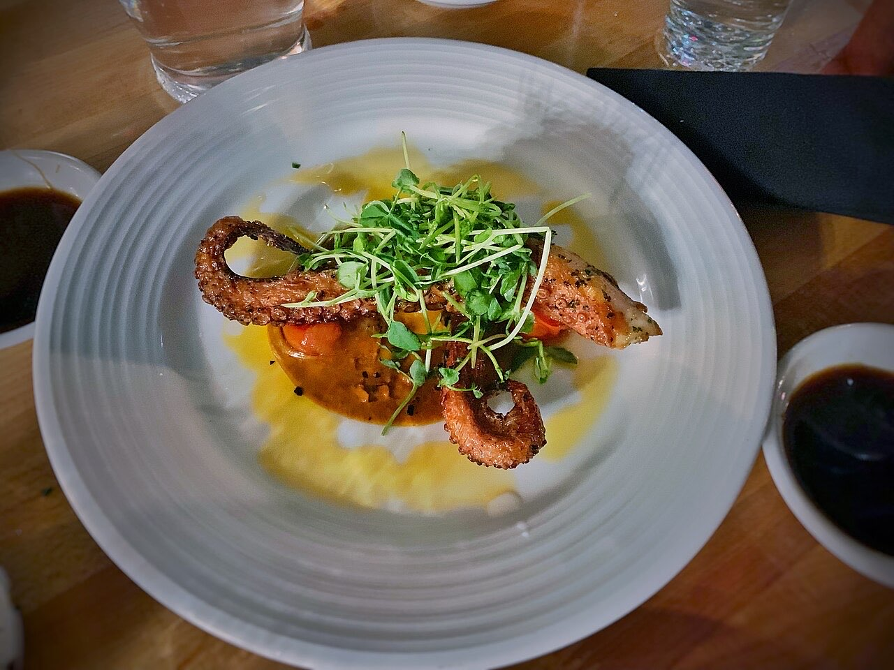
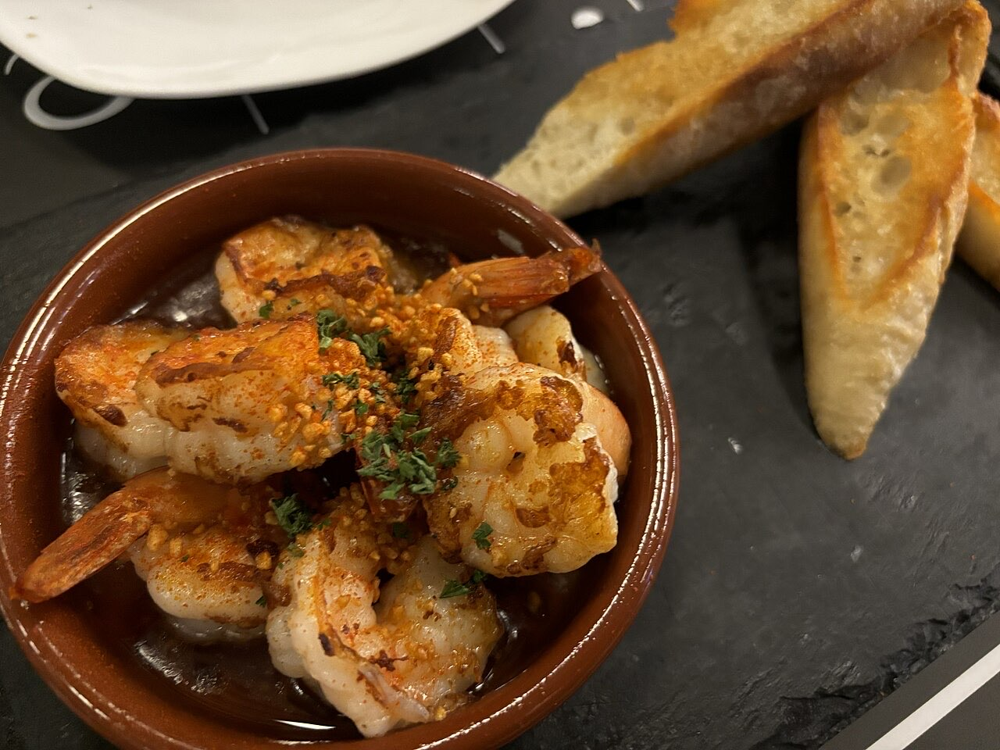

Fotografias ilustrativas — no site final usamos as vossas.
Leia o QR na mesa e peça do telemóvel.
Cozinha tradicional, com pregos e francesinha entre os pratos.
4,6★ em 418 avaliações no Google. Reservas aconselhadas.
O Cantinho Tio Júlio é um restaurante de cozinha tradicional portuguesa na Avenida Dom Afonso Henriques, junto à estação de comboios, em Guimarães. Com muito movimento, convém reservar.


Fotografias ilustrativas — no site final usamos as vossas.
Novo · Pedidos por QR code
Menos espera nas horas de ponta, menos enganos nos pedidos e a equipa livre para servir.
Pedido de reserva
Escolha o dia e a hora — o pedido chega por WhatsApp e confirmamos logo.
↑ Assim chegaria a mensagem ao vosso WhatsApp. (Nesta demonstração nada é enviado.)
Onde estamos
| Ter–Qui | 12:00–15:00 · 19:30–22:00 |
|---|---|
| Sex–Sáb | 12:00–15:00 · 19:30–22:30 |
| Dom–Seg | Encerrado |
Proposta para Cantinho Tio Júlio
Esta página foi feita de propósito para Cantinho Tio Júlio por João Machado, programador web aqui de Guimarães. Inclui:
Eu trato do alojamento e da manutenção. Sem compromisso.